Constraints for Edge-Preserving Full-Waveform Inversion
From Penalties to Projections for Salt Imaging
Schools of EAS, CSE, ECE — Georgia Institute of Technology
2026-04-13


Constraints for Edge-Preserving Full-Waveform Inversion
Felix J. Herrmann
School of Earth and Atmospheric Sciences — Georgia Institute of Technology
Based on (Peters and Herrmann 2017), (Esser et al. 2016), (Esser et al. 2018), (Peters, Smithyman, and Herrmann 2019)
Outline
- Motivation — Avoiding local minima with extended formulations (Esser et al. 2018)
- Tikhonov regularization — Limitations of penalty-based approaches
- Regularization with constraints — Projection-based alternative
- Part I: Penalties vs. Constraints — Practical aspects (Peters and Herrmann 2017; Esser et al. 2016)
- Part II: Constraints — Theory — Convex sets, projections, and algorithms (Peters, Smithyman, and Herrmann 2019)
- Part III: Application to Salt — Automatic salt flooding (Esser et al. 2018, 2016)
Motivation
Avoiding local minima
Full-waveform inversion solves a non-linear least-squares problem (Esser et al. 2018):
\[ \min_{m} \frac{1}{2}\sum_{j=1}^{N_s}\|F(m)q_j - d_j\|_2^2 \]
where \(F(m) = PA(m)^{-1}\) is the forward operator combining the PDE solve \(A(m)^{-1}\) with measurement \(P\).
Problem: The objective has parasitic local minima due to cycle-skipping.
Consider,
\[ F(c)q = \left( \begin{matrix} \mathcal{F}^{-1}e^{\imath\omega\|x_1 - x_s\|_2/c}\mathcal{F}q\\ \mathcal{F}^{-1}e^{\imath\omega\|x_2 - x_s\|_2/c}\mathcal{F}q\\ \mathcal{F}^{-1}e^{\imath\omega\|x_3 - x_s\|_2/c}\mathcal{F}q\\ \end{matrix} \right), \] where \(\mathcal{F}\) denotes the temporal Fourier transform, \(\omega\) the angular frequency, \(\imath=\sqrt{-1}\), \(x_i\) is the receiver location, \(x_s\) is the source location, and \(c\) is the soundspeed of the medium.
Avoiding local minima
Extended formulation (WRI) mitigates this by relaxing the PDE constraint (Leeuwen and Herrmann 2013).
This takes folllowing form for above problem:
\[ \min_{m,\Delta q} \frac{1}{2}\sum_{j=1}^{N_s}\|F(m)(q_j + \Delta q_j) - d_j\|_2^2 + \lambda^2 \|\Delta q_j\|_2^2 \]
As \(\lambda \uparrow \infty\), \(\|\Delta q\|_2\downarrow 0\) and we recover the original problem.
Example 1 — Local minima in FWI
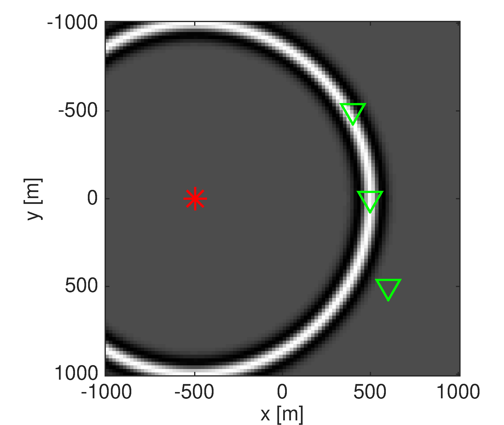
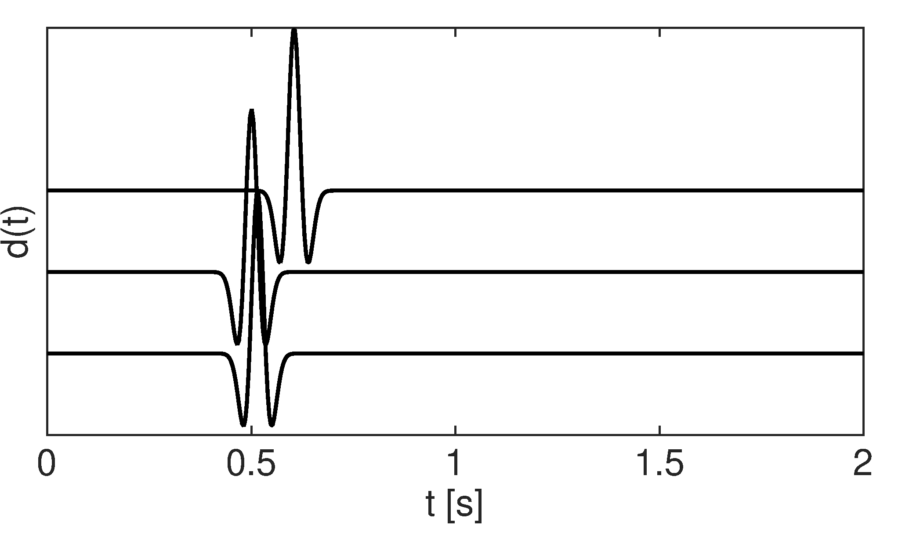
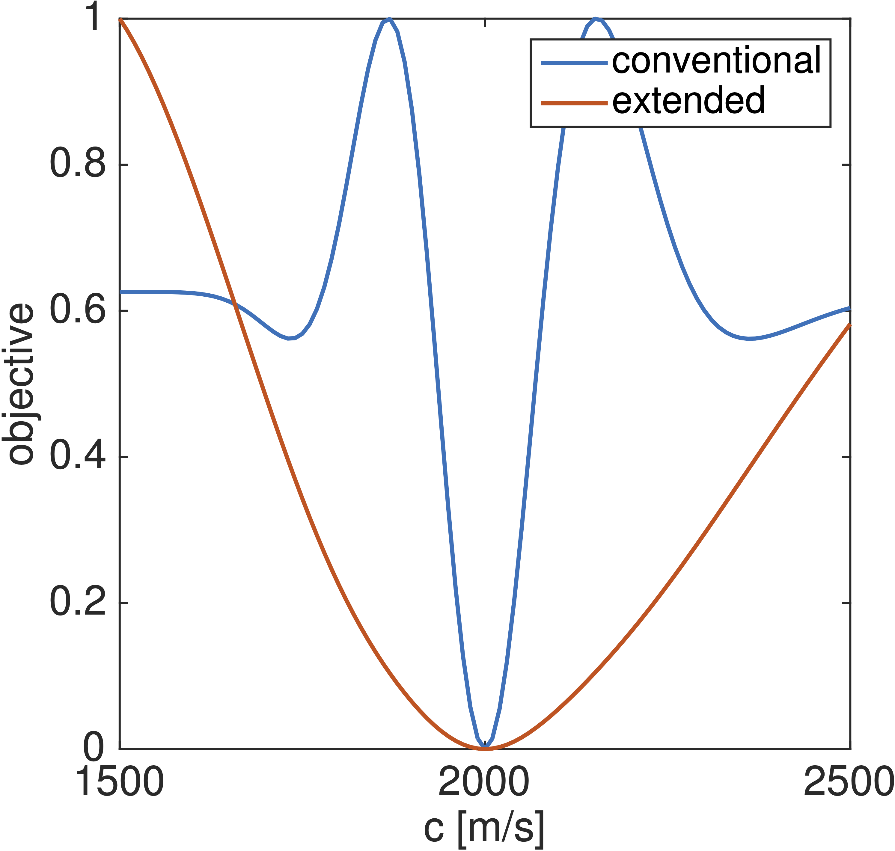
- Conventional (\(\lambda\rightarrow\infty\)): multiple local minima clearly visible
- Extended (\(\lambda=0.1\)): local minima are effectively mitigated
- Band-limited data makes both large- and small-scale recovery difficult
Example 2 — Why constraints matter
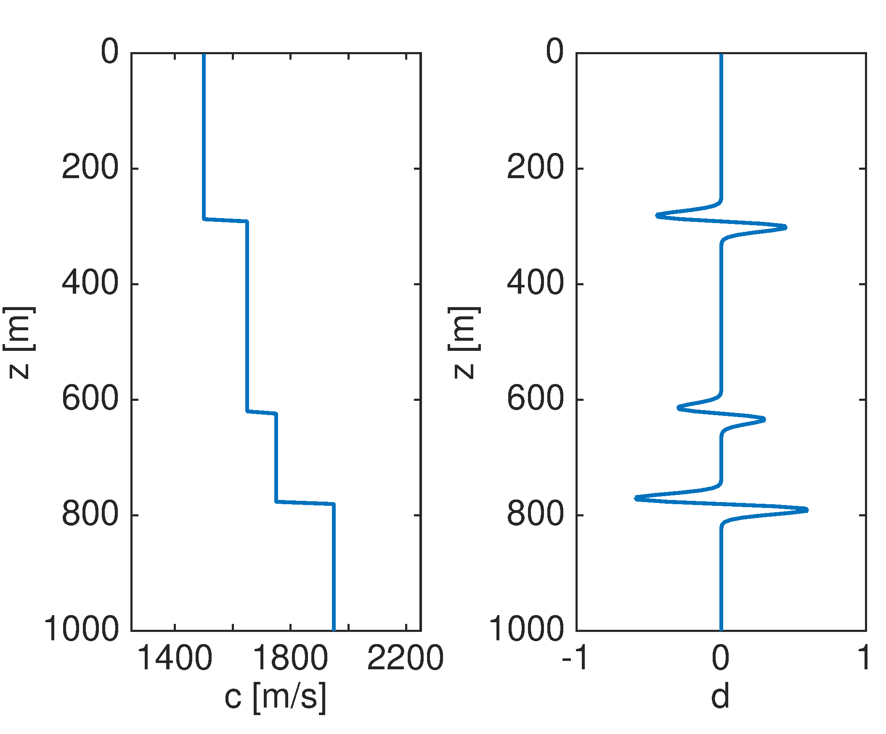
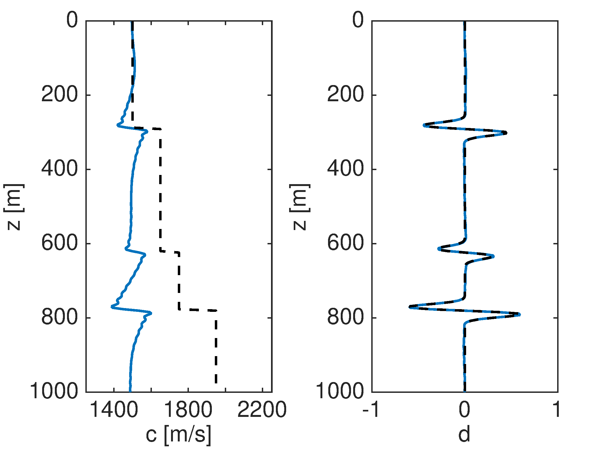
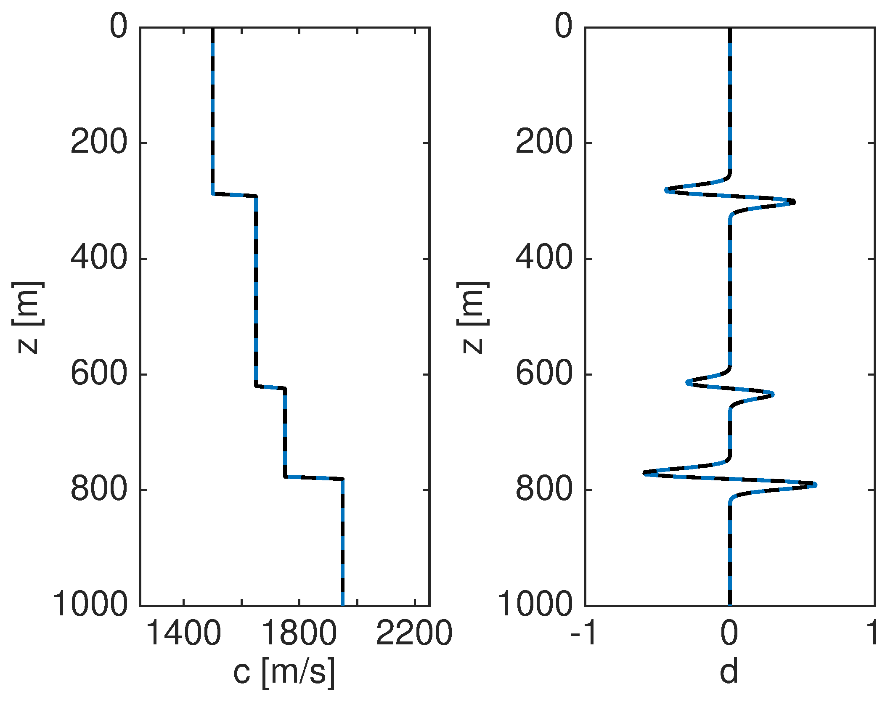
Recover 1D velocity \(c(z)\) from band-pass filtered data \(d = F(c)q\):
\[ \min_{c\geq c_0} \|F(c)q - d\|_2^2 \quad \text{subject to}\quad Dc\geq 0 \]
- Bounds (\(c \geq c_0 = 1500\,\mathrm{m/s}\)) + monotonicity (\(Dc \geq 0\)) recover broadband velocity from bandlimited data
Tikhonov regularization
\[ \min_{\mathbf{m}} f(\mathbf{m}) + \frac{\alpha}{2}\|R_1\mathbf{m}\|^2+ \frac{\beta}{2}\|R_2\mathbf{m}\|^2 \]
- well-known & successful technique
- is differentiable
- not an exact penalty
- regularization may adversely affect gradient & Hessian
- requires non-trivial choices for hyper parameters
- not easily extended to edge-preserving norms
- no guarantees that all model iterates are regularized
Regularization w/ constraints
\[ \min_{\mathbf{m}} f(\mathbf{m})\quad\text{subject to}\quad \mathbf{m}\in \mathcal{C}_1\cap\mathcal{C}_2 \]
- not well-known in our community
- requires understanding of latest optimization techniques
- does not affect gradient & Hessian
- easier parameterization
- able to uniquely project onto intersection of multiple constraint sets
- constraints do not need to be differentiable
- constraints are satisfied at every model iterate
Proxy projection
Find model \(\mathbf{m}\), closest to \(\mathbf{x}\), such that it satisfies the constraints:
\[ \mathcal{P}_\mathcal{C}(\mathbf{x})=\arg\min_\mathbf{m}\|\mathbf{m}-\mathbf{x}\|_2^2\quad\text{subject to}\quad \mathbf{m}\in \mathcal{C}_1\cap\mathcal{C}_2 \]
yielding
- nonlinear “minimal complexity” best approximation of \(\mathbf{m}\)
- \(\mathbf{m}\rightarrow \mathbf{x}\) when \(\tau\rightarrow\tau_0=\mathrm{TV}(\mathbf{x})\) and \(\mathbf{m}\in \mathrm{Box}\)
- edge preserving
Best approximations
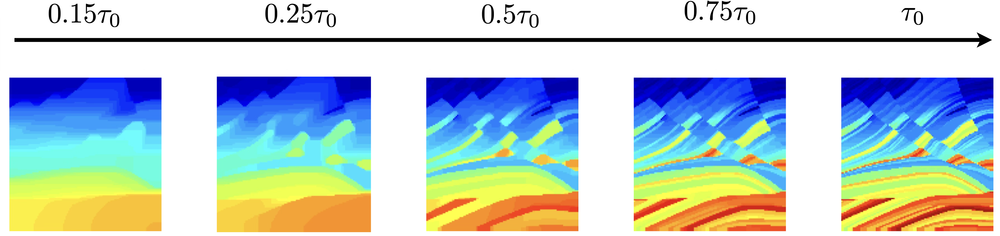
Projection onto the intersection of box and TV-norm constraints for decreasing values of \(\tau\)
Part I: Penalties vs. Constraints — Practical Aspects
Based on (Peters and Herrmann 2017) and (Esser et al. 2016)
Total-variation norm — velocity blocking
The total-variation (TV) norm of a velocity model \(\mathbf{m}\) (Rudin, Osher, and Fatemi 1992):
\[ \text{TV}(\mathbf{m}) = \frac{1}{h}\sum_{ij}\sqrt{({m}_{i+1,j}-{m}_{i,j})^2 + ({m}_{i,j+1}-m_{i,j})^2} \]
Combined with box constraints (\(l \leq m_{i,j} \leq u\)), the projection:
\[ \min_{\mathbf{m}}\|\mathbf{m} - \mathbf{m}_\ast\|^2 \quad\text{subject to}\quad \mathbf{m}\in \text{Box} \text{ and } \text{TV}(\mathbf{m}) \leq \tau \]
finds a unique blocked velocity model whose blockiness depends on \(\tau\).
Projecting onto TV + Box constraints
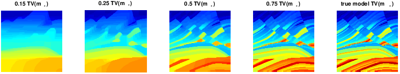
- As \(\tau\) increases, the projected model is less blocky and closer to the original
- The parameter \(\tau\) predictably controls model complexity
FWI with TV-like penalties
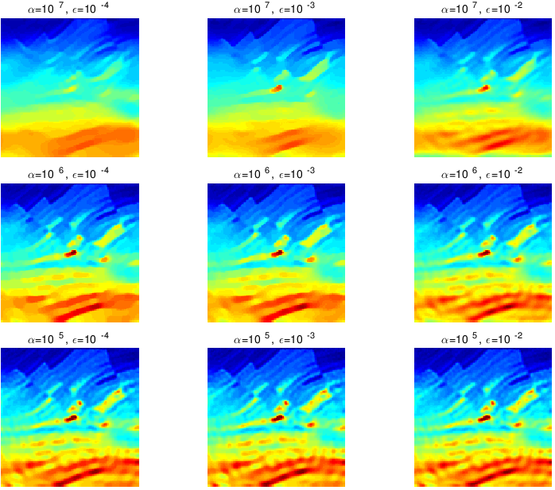
\[\min_{\mathbf{m}} f(\mathbf{m})+\alpha \text{TV}_{\epsilon}(\mathbf{m})\]
- Smooth approximation: \(\text{TV}_{\epsilon}(\mathbf{m}) = \frac{1}{h}\sum_{ij}\sqrt{(m_{i+1,j}-m_{i,j})^2 + (m_{i,j+1}-m_{i,j})^2 + \epsilon^2}\)
- No distinctive progression from “blocked” to less blocky
- Unpredictable behavior as a function of \(\alpha\) and \(\epsilon\)
FWI with TV constraints — predictable
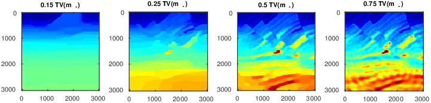
- Predictable progression from blocky to detailed as \(\tau\) increases
- Only one parameter (\(\tau\)) to set — directly measurable from initial model
- Model iterates always satisfy constraints
Why constraints?
- Constraints translate prior information more directly than penalties
- \(\tau\) is directly measurable from a starting model; trade-off parameter \(\alpha\) is not
- Absence of user-specified weights
- Unique projections via Dykstra’s algorithm (Dykstra 1983) — no weight selection needed
- Constraints do not alter the objective (data misfit)
- Constraints are only activated when necessary
- If a proposed model satisfies all constraints, the projection does nothing
- Data-fitting and constraint handling are uncoupled
- Constraints are satisfied at each iteration
- Penalty methods do not guarantee this — making them prone to local minima
Results on BP 2004 — bounds only vs. TV
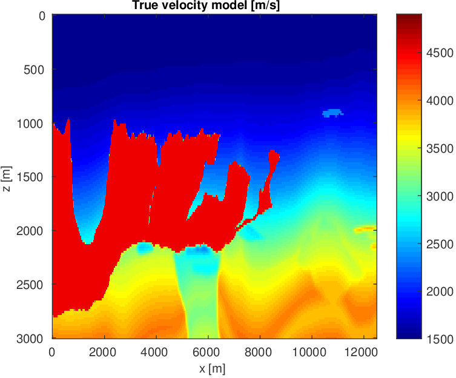
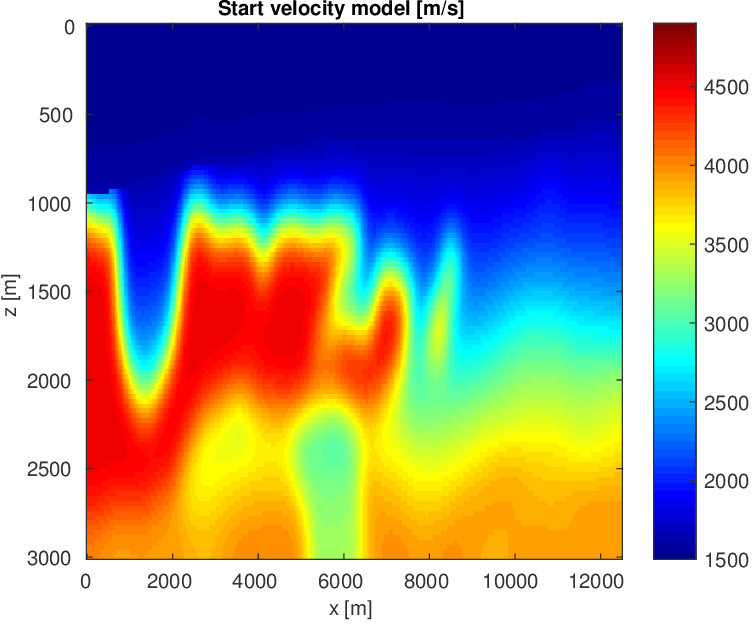
Results on BP 2004 — bounds only vs. TV
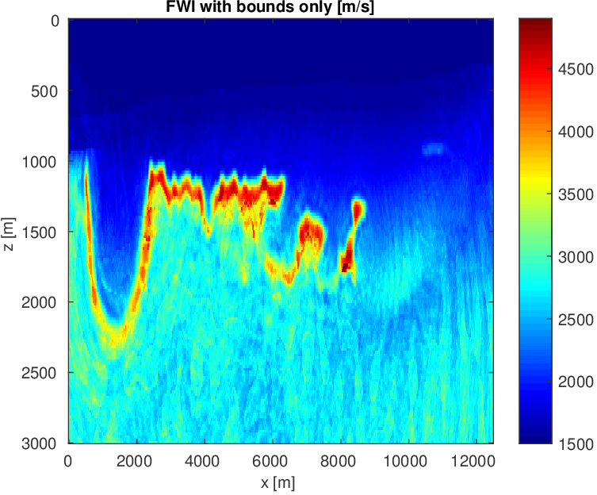
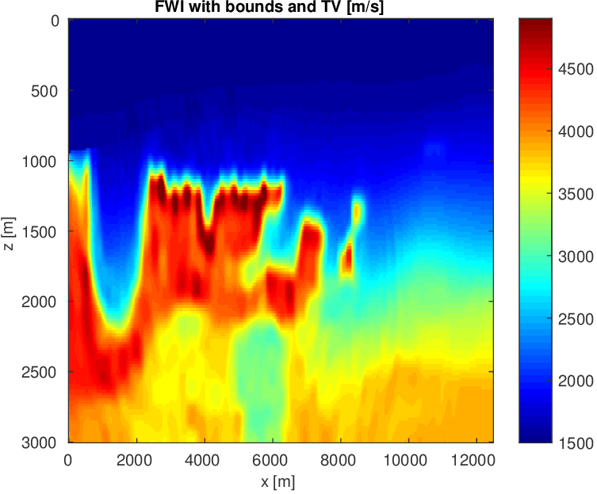
Algorithm — proj. gradient w/ Dykstra
| Initialize: define constraint sets (bounds, TV, others) |
|---|
| For \(k = 1, 2, \ldots\) |
| \(\quad\) 1. Compute gradient \(\nabla_\mathbf{m} f(\mathbf{m}_k)\) |
| \(\quad\) 2. Gradient step: \(\tilde{\mathbf{m}} = \mathbf{m}_k - \gamma\nabla_\mathbf{m} f(\mathbf{m}_k)\) |
| \(\quad\) 3. Project: \(\mathbf{m}_{k+1} = \text{DYKSTRA}(\tilde{\mathbf{m}})\) |
| End |
- Each model update depends only on the current model and gradient
- Updated models satisfy all constraints after each iteration
- Dykstra’s algorithm is parameter free in practice
Projection onto TV+Box — Marmousi


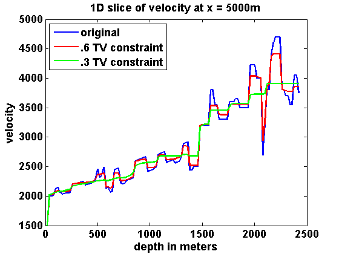
- Box: \(v_{\min}=1500\,\mathrm{m/s}\), \(v_{\max}=5500\,\mathrm{m/s}\)
- Smaller \(\tau\) \(\Rightarrow\) fewer unconformities, more “cartoon-like”
- Relaxing constraint (\(\tau\rightarrow\infty\)) recovers original model
FWI stuck in a local minimum
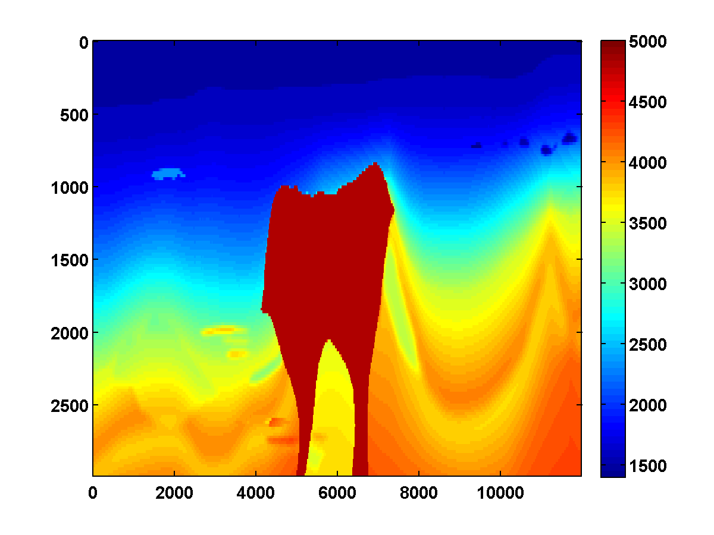
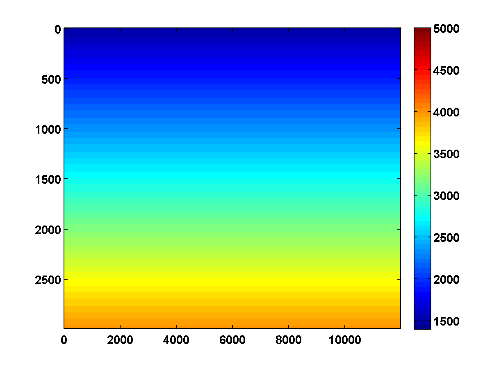
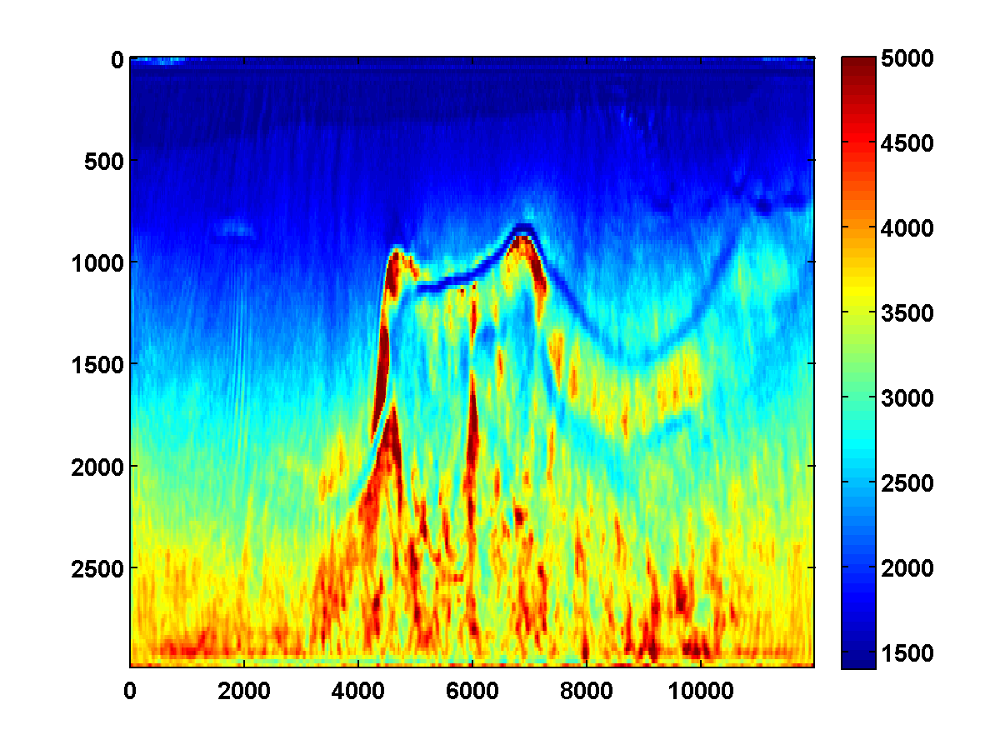
- Middle portion of BP 2004 model — FWI places a velocity low below top-of-salt
- Poor starting model + missing low frequencies + limited offsets
- FWI is stuck in an erroneous local minimum
Including constraints with projections
After including constraints, FWI solves (Esser et al. 2016):
\[ \min_{\mathbf{m}}\Phi(\mathbf{m})\quad \text{subject to} \quad\mathbf{m}+\Delta\mathbf{m}\,\in\, \mathcal{C} \]
At iteration \(k\), constraints are imposed by projecting:
\[ \Pi_{\mathcal{C}}(\mathbf{m}^k) = \arg\min_\mathbf{m} \frac{1}{2} \|\mathbf{m} - \mathbf{m}^k\|^2 \quad\text{subject to}\quad \mathbf{m}\,\in\,\mathcal{C} \]
Properties:
- When \(\mathcal{C}\) is convex, the projection is unique
- Intersections of convex sets are also convex
- Examples: box constraints (velocity bounds) and TV-norm ball (\(\text{TV}(\mathbf{m}) \leq \tau\))
The hinge loss — a constraint for salt
Key insight: In sedimentary basins, velocity generally increases with depth. Salt bodies are high-velocity inclusions — we can step into salt but should not easily step out.
The asymmetric (one-sided) TV constraint (Esser et al. 2016):
\[ \|\min(0, D_z \mathbf{m})\|_1 \leq \xi \]
- \(D_z\) = vertical finite differences
- Small \(\xi\): allow velocity to step into salt, discourage stepping out
- Relaxing \(\xi\): gradually allows velocity lows to build up below salt
This is the hinge loss applied to vertical velocity differences — commonly used in machine learning for SVMs.
Multiple relaxed FWI cycles
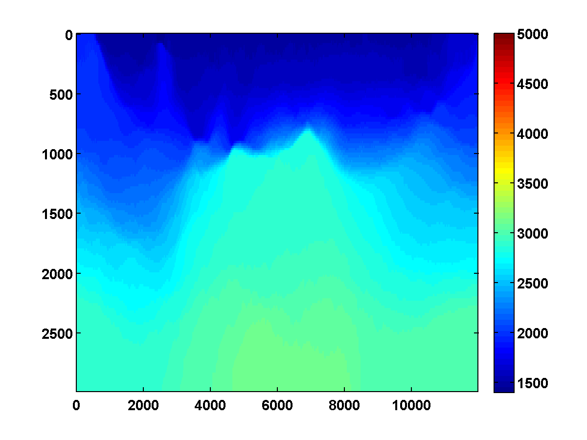
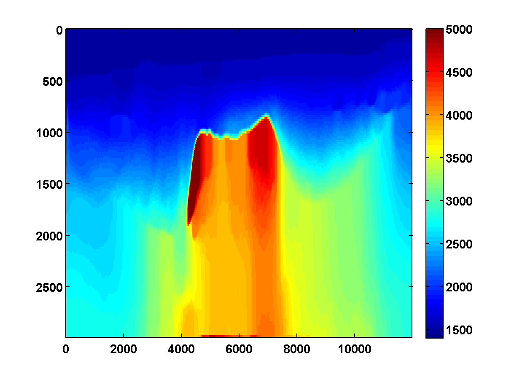
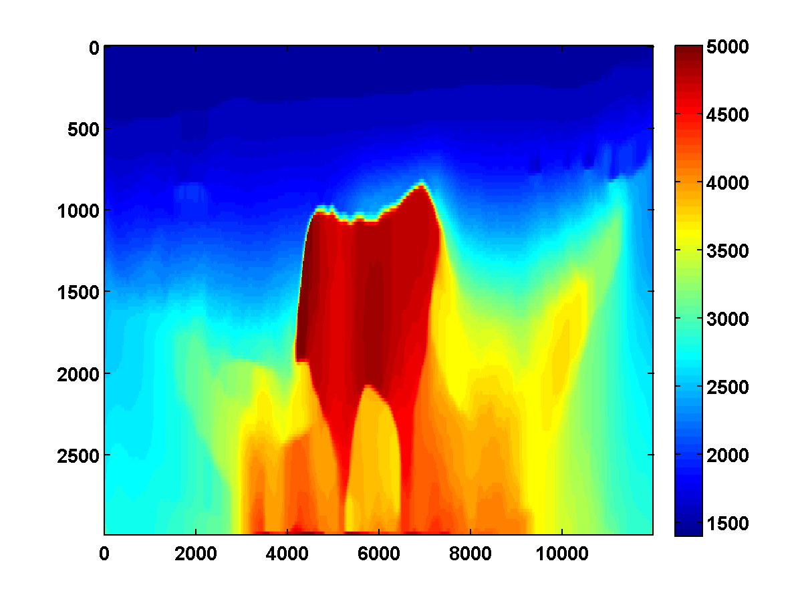
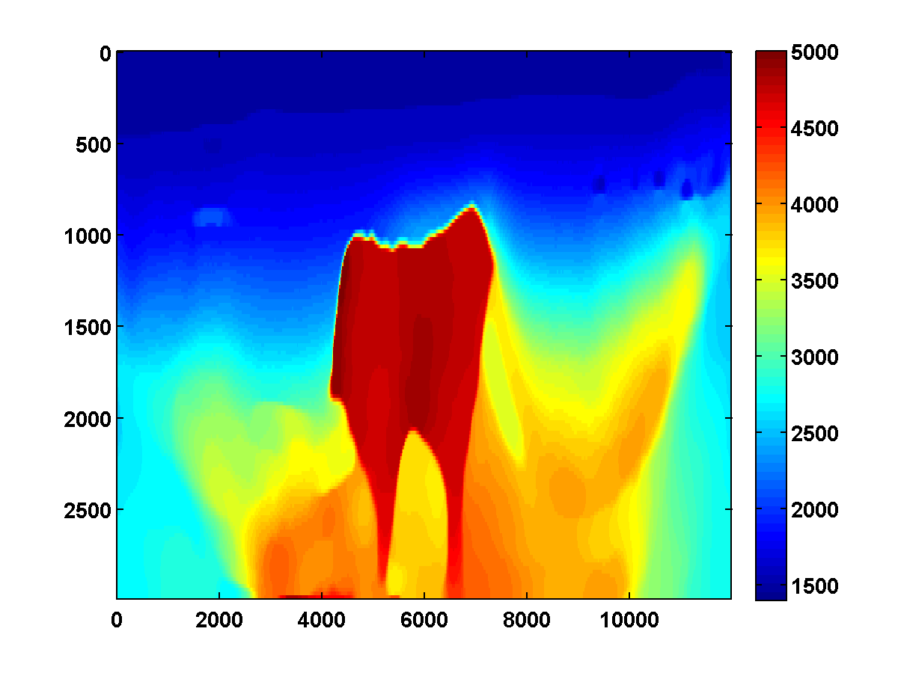
- Fixed box (\(v_{\min}=1500\), \(v_{\max}=5000\,\mathrm{m/s}\)) and TV (\(\tau=0.9\times \tau_{\text{true}}\))
- Gradually relax hinge-loss \(\xi\) over warm-started FWI cycles
- Salt body is remarkably well recovered
Why this automatic approach works
The constrained approach succeeds when:
- Relaxed constraints mitigate adverse effects of local minima from prior cycles
- Sharp reflectors of correct sign are introduced
- Progress is made during each FWI cycle
- “Fine-scales” of previous cycle contribute to “coarse-scales” of next cycle
Conceptual similarity to manual workflows:
| Stage | Manual Workflow | Constrained FWI |
|---|---|---|
| 1 | Pick top salt | TV + hinge-loss delineates top salt |
| 2 | Salt flood downward | Hinge-loss allows buildup into salt |
| 3 | Pick bottom salt + tomography | Relaxed hinge-loss allows velocity lows |
| 4 | Iterate | Warm-started cycles |
Part II: Constraints — Theory
Based on (Peters, Smithyman, and Herrmann 2019)
Limitations of unconstrained regularization
Quadratic (Tikhonov) penalties (Peters, Smithyman, and Herrmann 2019):
\[ \phi(\mathbf{m}) = f(\mathbf{m}) + \frac{\alpha_1}{2}\|R_1\mathbf{m}\|_2^2 + \frac{\alpha_2}{2}\|R_2\mathbf{m}\|_2^2 \]
Problems:
- Penalties alter gradient and Hessian: \(\nabla^2_\mathbf{m} \phi = \nabla^2_\mathbf{m} f + \alpha_1 R_1^\top R_1 + \alpha_2 R_2^\top R_2\)
- Trade-off parameters \(\alpha_i\) have no physical meaning and are interdependent with data misfit
- Cannot directly encode non-smooth priors (TV norm, monotonicity)
- Gradient filtering \(\mathbf{m}^{k+1} = \mathbf{m}^k - \gamma\, s(\nabla_\mathbf{m} f)\) — no theoretical guarantees
Convex sets — definition and properties
A set \(\mathcal{C}\) is convex if for all \(\mathbf{x}, \mathbf{y} \in \mathcal{C}\) and \(0 \leq c \leq 1\):
\[ c\mathbf{x} + (1-c)\mathbf{y} \in \mathcal{C} \]
Key properties:
- Intersection of convex sets is convex
- Projection onto a convex set is unique
- Projections are non-expansive: \(\|\mathcal{P}_\mathcal{C}(\mathbf{x}) - \mathcal{P}_\mathcal{C}(\mathbf{y})\| \leq \|\mathbf{x} - \mathbf{y}\|\)
Advantages of the constrained formulation \(\min_\mathbf{m} f(\mathbf{m})\;\text{s.t.}\;\mathbf{m}\in\bigcap_{i=1}^p \mathcal{C}_i\):
- Objective (data misfit) is unchanged — gradient/Hessian unaffected
- Constraints in physical units (m/s, m/s per grid) — not abstract weights
- Model iterates feasible at every iteration
- Multiple constraints handled without trade-off parameters
POCS vs. Dykstra’s algorithm
To project onto the intersection of convex sets \(\mathcal{C} = \bigcap_{i=1}^p \mathcal{C}_i\):
POCS (Projection Onto Convex Sets): alternate projections \(\mathcal{P}_{\mathcal{C}_2}(\mathcal{P}_{\mathcal{C}_1}(\mathbf{m}))\)
- Finds a feasible point — but NOT the closest one
- Result is order-dependent (non-unique)
Dykstra’s algorithm (Dykstra 1983): alternate projections with auxiliary corrections
- Finds the unique Euclidean projection onto the intersection
- Result is order-independent
- No tuning parameters
POCS vs. Dykstra — toy example
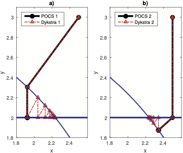
- POCS: distances 1.16 and 1.14 (order-dependent)
- Dykstra: distance 1.03 (unique minimum)
Dykstra vs. POCS on Marmousi
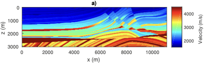
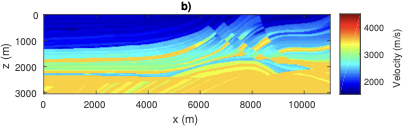
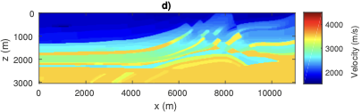
- Dykstra finds the boundary projection (closest to original)
- POCS may find interior points far from the boundary — over-constraining the model
Impact on FWI — Dykstra vs. POCS
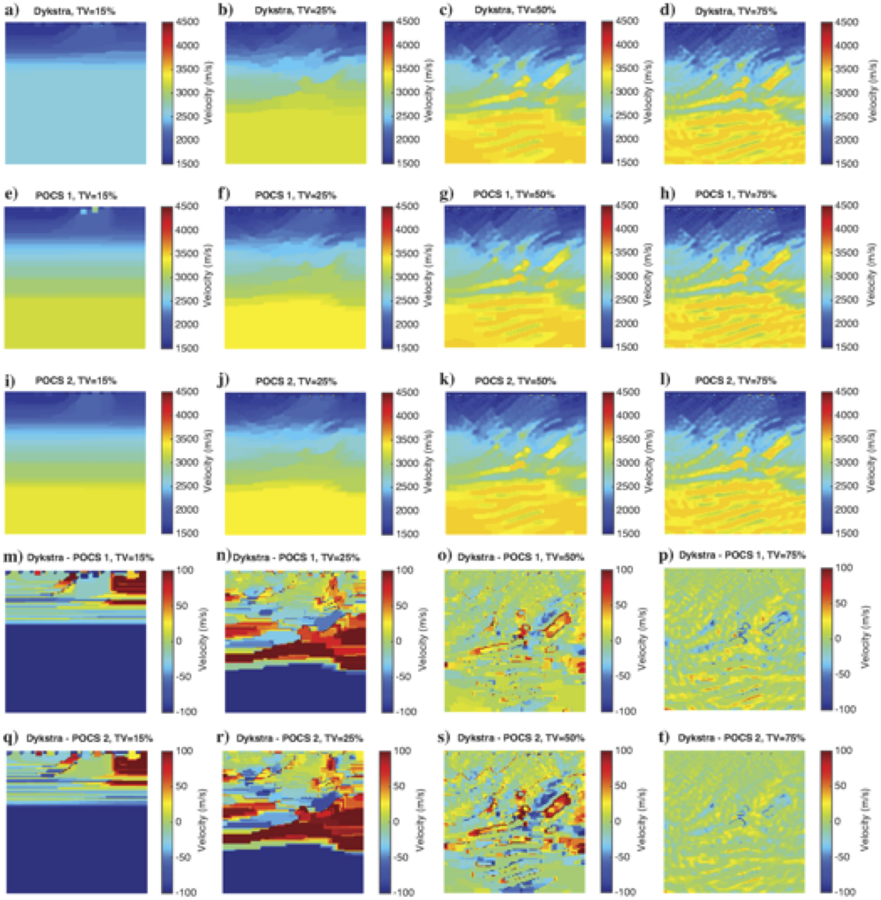
FWI with an incorrect source function with projections (with Dykstra’s algorithm) and FWI with two feasible points (with POCS) for various TV balls (as a percentage of the TV of the true model) and bound constraints. Also shown are the differences (the rightmost two columns) between results. The results show that using POCS inside a projected gradient algorithm instead of the projection leads to different results that also depend on the order in which we provide the sets to POCS. This example illustrates the differences between the methods, and it is not its intention to obtain excellent FWI results.
Peters, Smithyman, and Herrmann (2019), Fig. 3.
Projected gradient descent
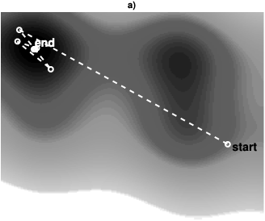
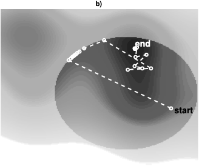
Update rule:
\[ \mathbf{m}^{k+1} = \mathcal{P}_\mathcal{C}\!\left(\mathbf{m}^k - \gamma\nabla_\mathbf{m} f(\mathbf{m}^k)\right) \]
- Gradient step followed by projection onto \(\mathcal{C}\)
- Constraints guide optimization to different (better) local minimum
Spectral Projected Gradient (SPG)
Three key improvements over standard projected gradient (Birgin, Martı́nez, and Raydan 2000):
- Spectral stepsize \(\alpha\) — mimics Hessian via Barzilai-Borwein (Barzilai and Borwein 1988): \[\alpha = \frac{\mathbf{s}_k^\top \mathbf{s}_k}{\mathbf{s}_k^\top \mathbf{y}_k}\] where \(\mathbf{s}_k = \mathbf{m}^{k+1} - \mathbf{m}^k\) and \(\mathbf{y}_k = \nabla f(\mathbf{m}^{k+1}) - \nabla f(\mathbf{m}^k)\)
- Non-monotone line search — allows temporary objective increase; reduces zigzagging
- Single projection per iteration — update direction \(\mathbf{p}^k = \mathcal{P}_\mathcal{C}(\mathbf{m}^k - \alpha\nabla f(\mathbf{m}^k)) - \mathbf{m}^k\); line search scales \(\gamma\) only
The 3-level nested optimization workflow
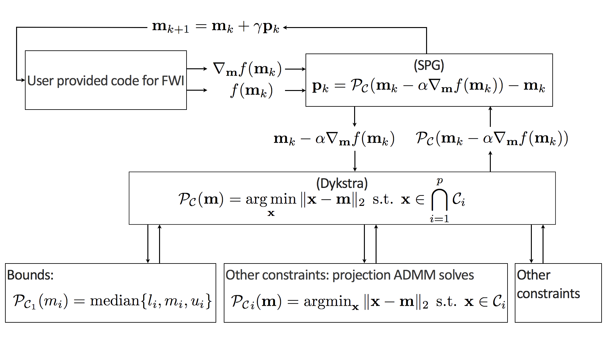
| Level | Method | Role |
|---|---|---|
| Top | SPG | Nonlinear optimization (data misfit) |
| Middle | Dykstra | Project onto intersection of constraints |
| Bottom | ADMM / closed-form | Individual set projections |
Each level is parameter-free by design.
SPG w/ multiple constraints — Algorithm
| Input: projectors \(\mathcal{P}_{\mathcal{C}_1}, \ldots, \mathcal{P}_{\mathcal{C}_p}\); initial \(\mathbf{m}^0 \in \bigcap \mathcal{C}_i\) |
|---|
| Initialize: \(M\) (line-search history), \(\eta \in (0,1)\), spectral step \(\alpha\), \(k=1\) |
| Repeat: |
| \(\quad\) 1. Compute \(f(\mathbf{m}^k)\) and \(\nabla_\mathbf{m} f(\mathbf{m}^k)\) |
| \(\quad\) 2. \(\mathbf{r}^k = \text{DYKSTRA}(\mathbf{m}^k - \alpha\nabla f(\mathbf{m}^k),\; \mathcal{P}_{\mathcal{C}_1}, \ldots, \mathcal{P}_{\mathcal{C}_p})\) |
| \(\quad\) 3. \(\mathbf{p}^k = \mathbf{r}^k - \mathbf{m}^k\) |
| \(\quad\) 4. Line search: find \(\gamma\) s.t. \(f(\mathbf{m}^k + \gamma\mathbf{p}^k) < \max(f_{k}, \ldots, f_{k-M}) + \epsilon\gamma\nabla f^\top \mathbf{p}^k\) |
| \(\quad\) 5. \(\mathbf{m}^{k+1} = \mathbf{m}^k + \gamma\mathbf{p}^k\) |
| \(\quad\) 6. Update spectral step: \(\alpha = \frac{\mathbf{s}_k^\top\mathbf{s}_k}{\mathbf{s}_k^\top\mathbf{y}_k}\) |
| Until convergence |
Numerical example — BG Compass model
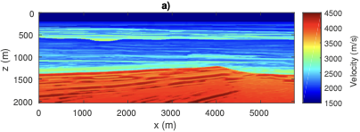
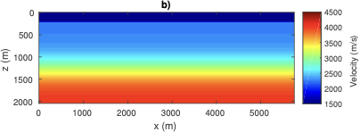
- 2D BG Compass model with realistic velocity “kickback”
- 56 sources/receivers, frequency-domain inversion 3–15 Hz
- Challenging: poor starting model, physics mismatch
Bounds only — insufficient
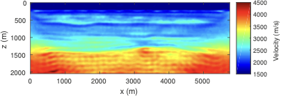
- Only top 700 m recovered reasonably
- Discontinuity at wrong depth and shape
- Bounds alone cannot prevent erroneous velocity structures
Adding structure-promoting constraints
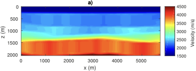
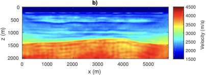
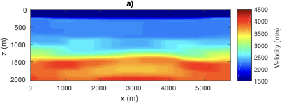
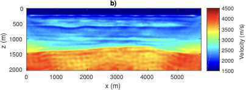
- Two-cycle strategy: strong constraints at low frequencies, relax at higher frequencies
- Both slope and TV constraints dramatically improve results
Comparison with quadratic penalties
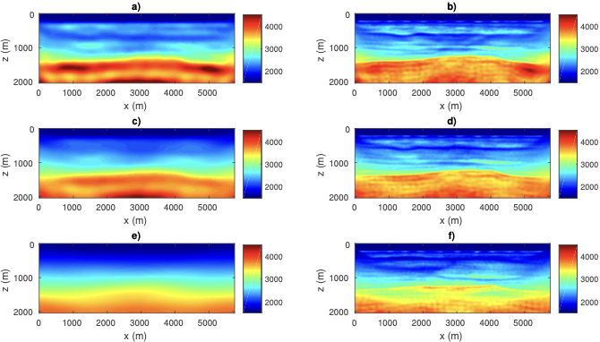
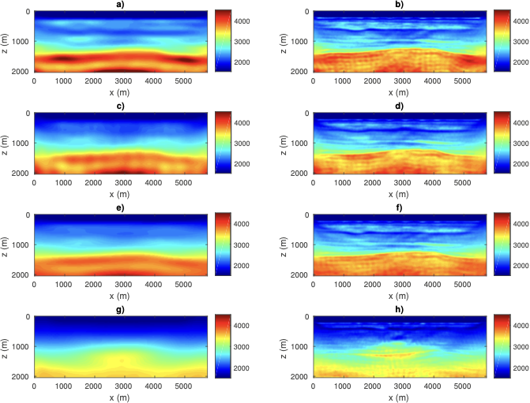
- Cannot directly encode monotonicity with quadratic penalties
- Parameters lack physical meaning and are interdependent
- Easy to over- or under-estimate \(\Rightarrow\) many results contain artifacts
Part III: Application to Salt
Based on (Esser et al. 2018) and (Esser et al. 2016)
Constrained WRI formulation
The full framework combines three constraints with the WRI objective (Esser et al. 2018):
\[ \min_m f(m) \quad \text{subject to} \quad m_i \in [b_i, B_i],\; \|m\|_{TV} \leq \tau,\; \|\max(0, D_z m)\|_1 \leq \xi \]
| Constraint | Role | Parameter |
|---|---|---|
| Box | Physical velocity bounds | \(v_{\min}, v_{\max}\) |
| TV norm | Edge preservation, denoising | \(\tau\) |
| Hinge loss | Discourage velocity decrease with depth | \(\xi\) |
Continuation strategy: gradually relax \(\xi\) over warm-started cycles while keeping box and TV fixed.
Marmousi projections
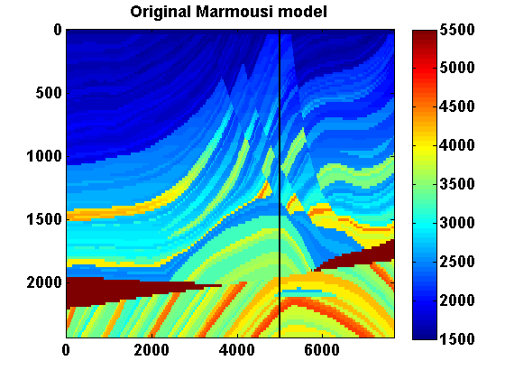
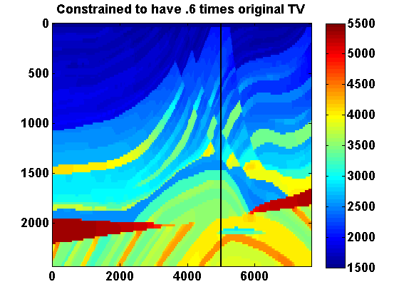
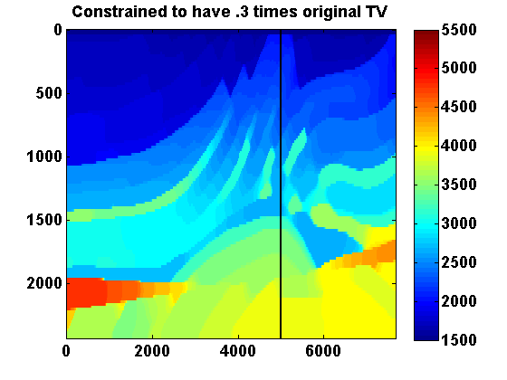
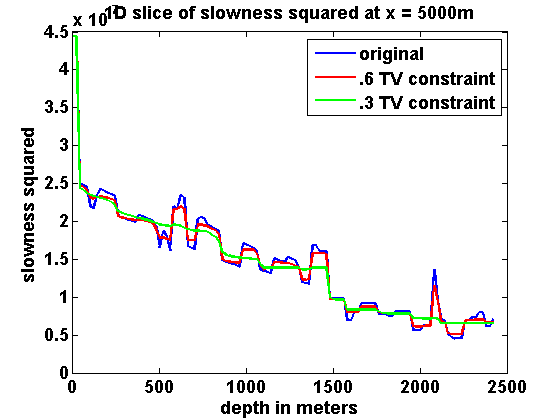
BP 2004 — poor starting model, no TV
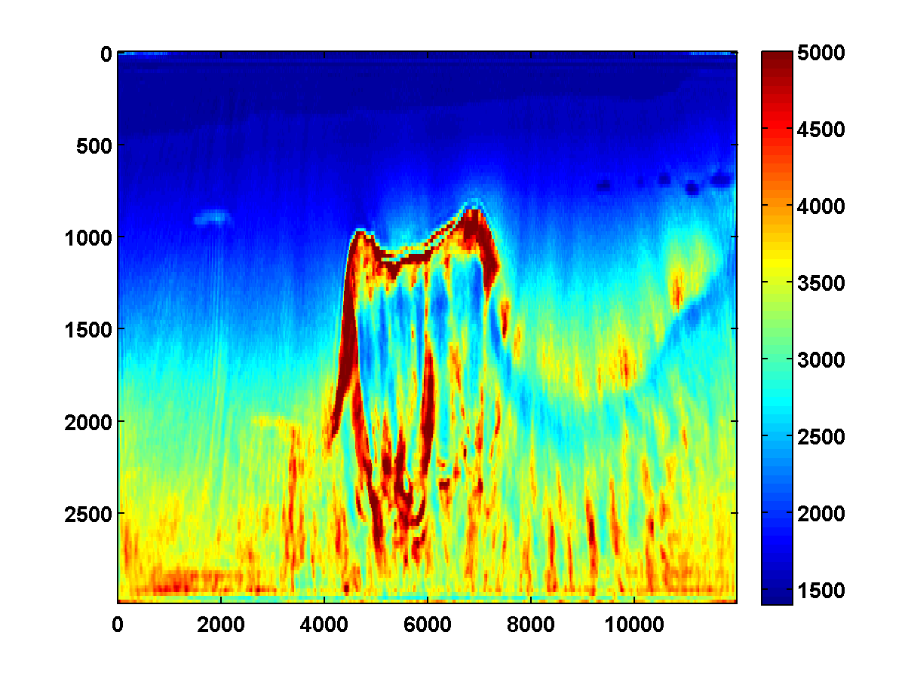
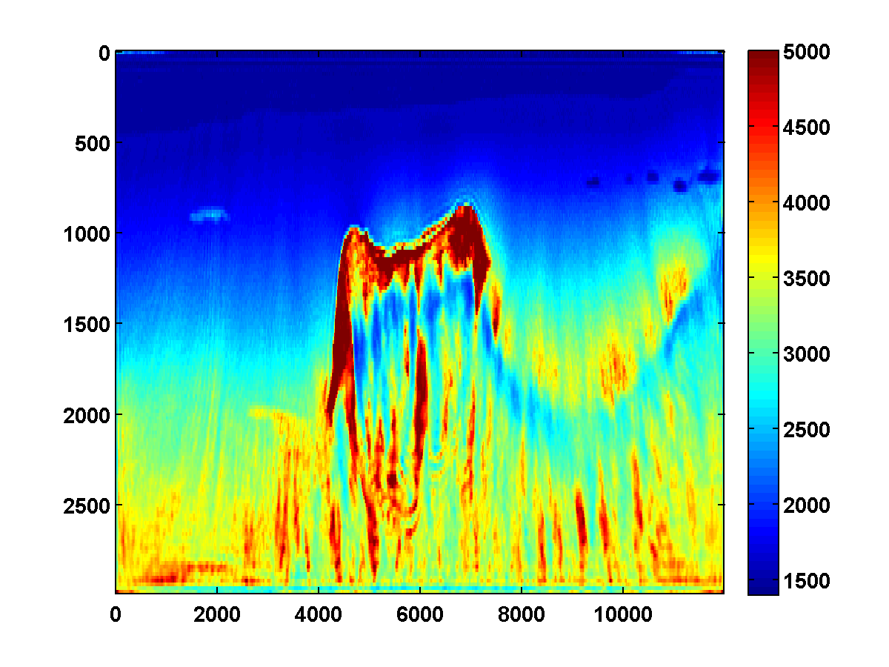
- WRI with box constraints only — noisy result, no improvement after multiple passes
- Velocity low after stepping into salt is persistent and cannot be overcome
BP 2004 — TV constraints insufficient
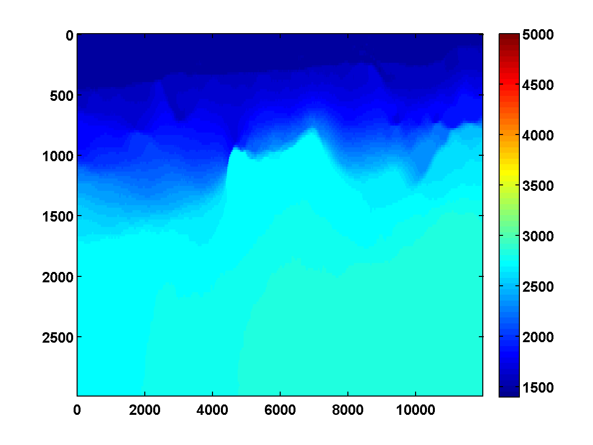
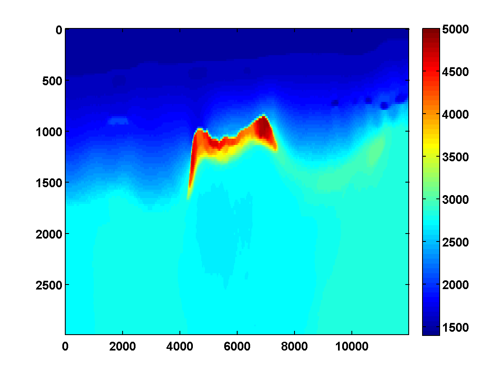
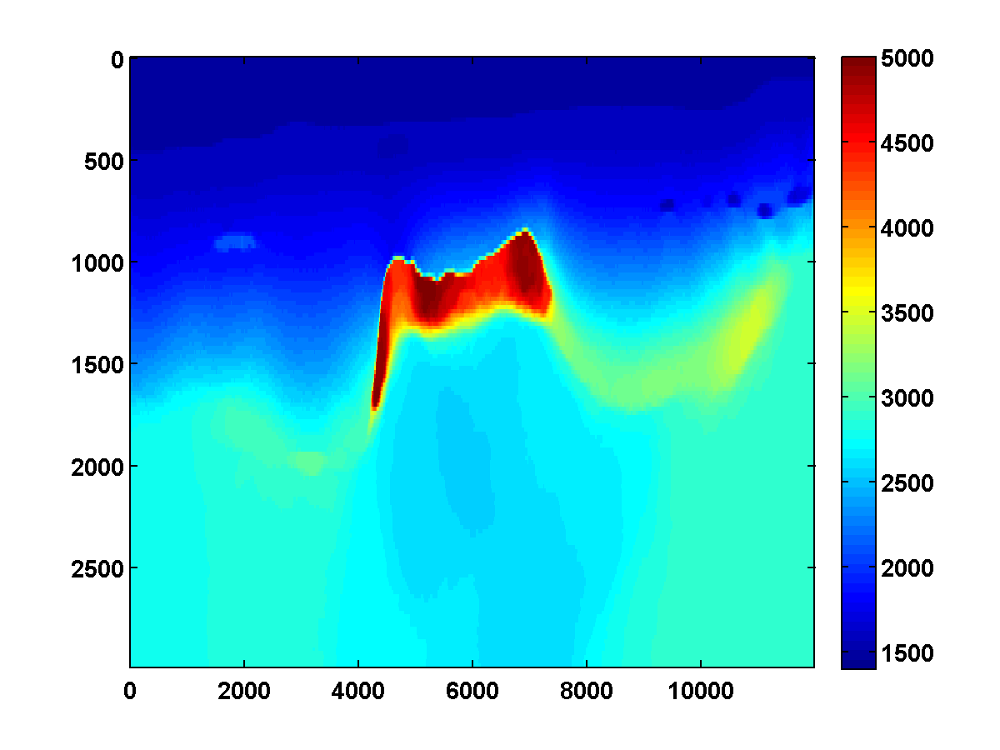
- TV + box constraints recover top salt accurately
- But imprint of velocity low is still too strong — stuck at poor solution
- Motivates the need for the asymmetric hinge-loss constraint
The hinge-loss constraint for salt
Asymmetric one-sided TV constraint in the vertical direction (Esser et al. 2018):
\[ \|\max(0, D_z m)\|_1 \leq \xi \]
Physical interpretation:
- Penalizes the sum of positive vertical differences in slowness squared (= negative velocity jumps)
- Small \(\xi\): velocity can step into high-velocity salt but cannot easily step out
- Large \(\xi\): allows velocity lows to build up below salt
Continuation strategy:
- Start with small \(\xi\) (nearly monotonic velocity increase)
- Gradually increase \(\xi\) over successive warm-started passes
- Sequence: \(\frac{\xi}{\xi_{\text{true}}} = .01,\, .05,\, .10,\, .15,\, .20,\, .25,\, .40,\, .90\)
WRI + TV + Hinge-loss continuation
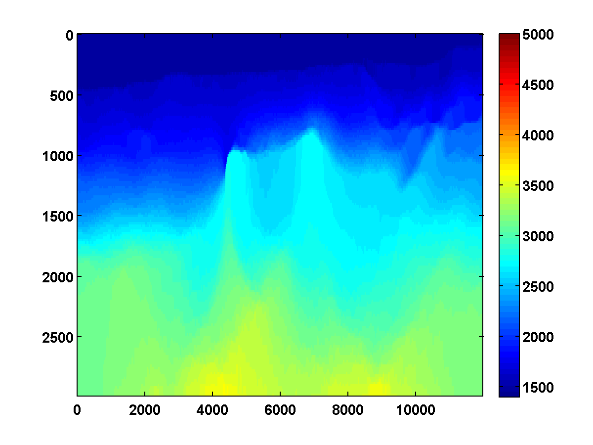
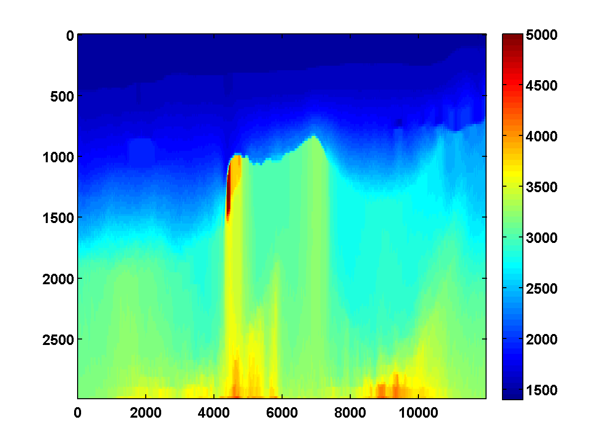
Constrained FWI (adjoint state)
- Same continuation strategy applied to conventional FWI (adjoint-state method)
- Results nearly as good as WRI — constraints are the key ingredient
Data and model error evolution
- Both WRI and FWI: model error continues to decrease with constraint relaxation
- Sudden drops correspond to relaxation passes; increases correspond to higher frequencies
Data and model error evolution
- Both WRI and FWI: model error continues to decrease with constraint relaxation
- Sudden drops correspond to relaxation passes; increases correspond to higher frequencies
Unconstrained vs. constrained WRI
Unconstrained WRI
WRI + TV + Hinge loss
- Left: unconstrained WRI gets stuck in local minimum
- Right: constrained WRI successfully recovers salt body
FWI vs. constrained WRI
Unconstraine FWI
WRI + TV + Hinge loss
SEAM model — setup
- Phase I SEAM model (Fehler and Keliher 2011): rugose top salt, steep sides, complicated base
- 96 sources, 196 receivers, 8000 m spread; 3–12 Hz bandwidth
- Starting model: 1D compaction trend — no salt present
- Unconstrained FWI fails catastrophically
SEAM — constrained FWI result
Recovered features:
- Rugose top salt boundary
- Uniform salt interior
- Correct depth/geometry of bottom salt
- Salt flanks
- Sub-salt velocity structure
No assumptions about salt velocity — recovered directly from data.
SEAM — evolution

SEAM model — movie
Evolution of the model as the inversion proceeds and constraints are relaxed. Initially, strong constraints introduce a salt-like body extending to bottom. As constraints relax, salt geometry develops and sub-salt structure appears.
In memoriam
John “Ernie” Esser\(^\dagger\) (May 19, 1980 – March 8, 2015)
The work presented in this lecture is in large part a tribute to Ernie Esser, who passed away in tragic circumstances. He was a young and very promising scientist whose contributions to constrained optimization for seismic inversion remain foundational.
To our knowledge, Ernie’s work is the first successful attempt to replace labour-intensive manual salt-flooding workflows with an automatic heuristic: successive relaxations of asymmetric TV-norm constraints with warm-started passes through frequency batches. (Esser et al. 2018)
Summary
- Penalties vs. constraints: constraints are more predictable, require fewer parameters, and guarantee feasibility at every iterate
- Key ingredients: box constraints (physical bounds), TV norm (edge preservation), hinge loss (asymmetric salt constraint)
- Algorithms: Dykstra’s algorithm for projections onto intersections; SPG for nonlinear optimization; 3-level nested workflow
- Results: automatic salt flooding from poor starting models on BP 2004 and SEAM benchmarks — replacing labor-intensive manual workflows
- Both WRI and FWI benefit from the constrained framework